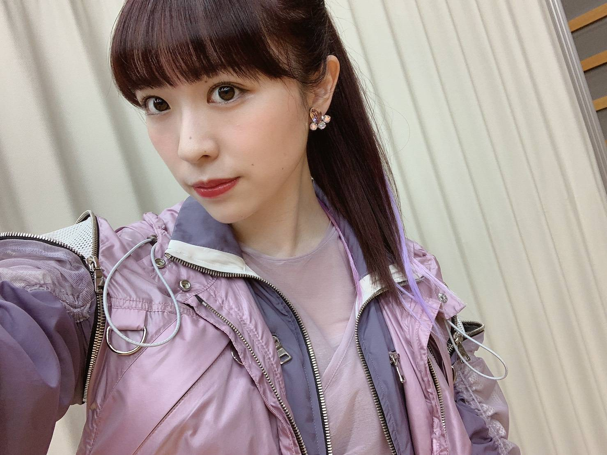
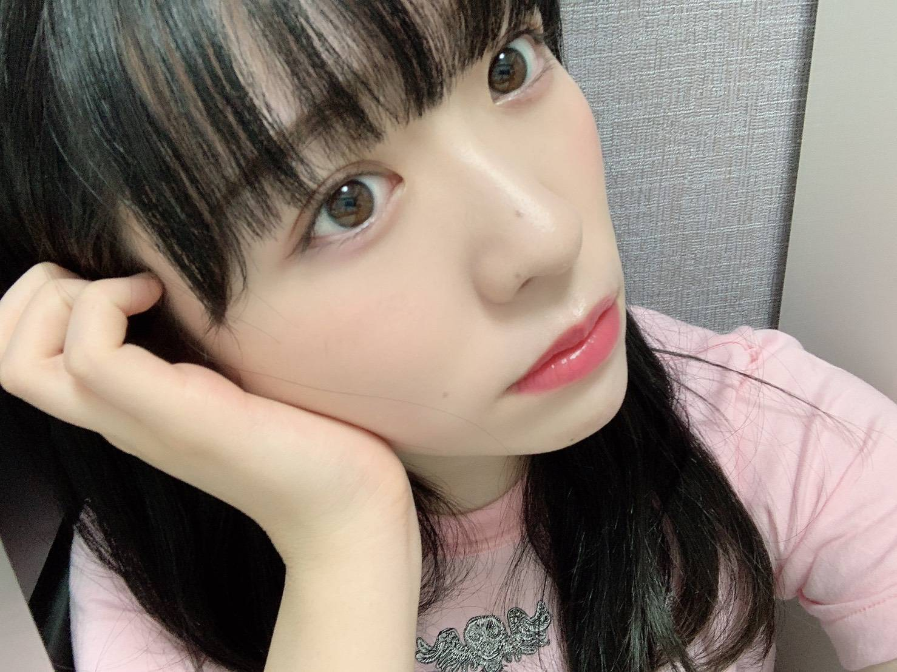
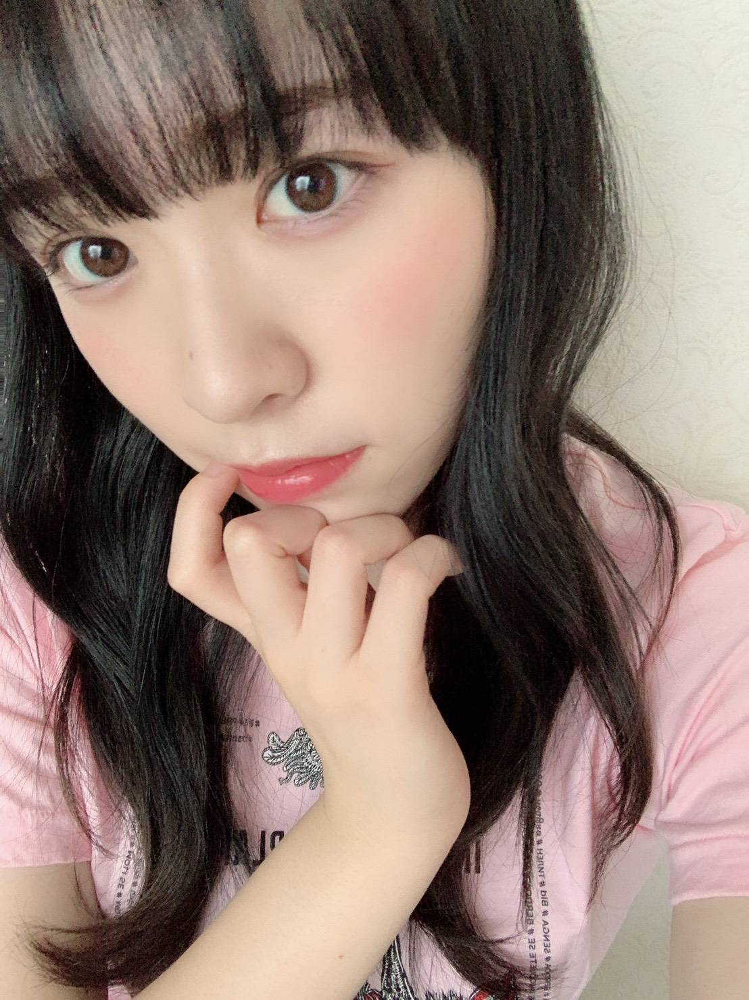
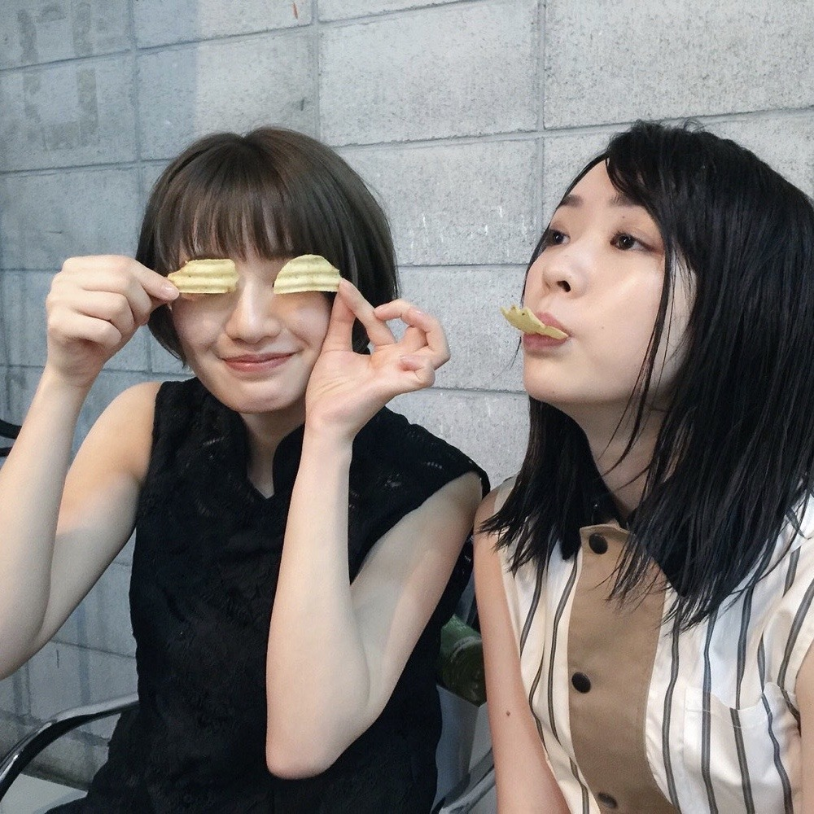

2020/0906Sun紙吹雪の鳥
24時間TV、FNS歌謡祭
出演させて頂きました！

最近前髪を重めスタイルにしたので
前髪がとても扱い易いです。
専ら高いポニーテールが多いけど
どうでしょうか！
Route 246素敵な曲だし
物凄く心地良く、踊りやすいです。

もう9月なんですねー
9月になるともうすぐで私の誕生日かあと
勝手にわくわくしております(2ヶ月後)
年々時が経つの早く感じます、、
早く皆さんにお会いしたいです！

花奈さんは入ってきた当初から
私の事を本当に可愛がってくださっていて
そのおかげで実現したカナヲとのグラビア撮影や
雑誌の取材もありました。
セラミュで同じチームになったあたりからは
お仕事の話もするようになり
みんなでご飯に行ったり
カラオケに行ったりと、沢山の思い出を
花奈さんと作らせていただきました。
2019年の真夏の全国ツアーで踊った日常。
花奈さんとたまおとれなちで踊った
間奏のダンス、今でも忘れない。
熱かった。夏だからとかではなくて
感情的に物凄く燃えている感じが
した瞬間でした。
あの時花奈さんと隣同士で踊った
あの感覚は忘れられません。

みり愛
2020/09/06 20:30
コメント(394)
みり愛ちゃん、頭痛のほうは良くなりましたか？
これからも体調には充分気をつけて下さい。
これからも体調には充分気をつけて下さい。
みり愛ちゃん今日もメールありがとう
涼しくなってきたから私は今日から長袖にした！
冬も色々服考えられて楽しいよね〜
今日の乃木中楽しみにしてるね！
実習終わったからまったりリアタイできるー！！笑
連休中にお手紙書くね！！
明日も体調に気をつけてすごしてね
涼しくなってきたから私は今日から長袖にした！
冬も色々服考えられて楽しいよね〜
今日の乃木中楽しみにしてるね！
実習終わったからまったりリアタイできるー！！笑
連休中にお手紙書くね！！
明日も体調に気をつけてすごしてね
みり愛ちゃん。
乃木中での、見事なヒムいじり。あれって演技？本音トーク？
どちらにしても、女優魂満開やったし。
ワルみり愛っぷりが良かったです。
乃木中での、見事なヒムいじり。あれって演技？本音トーク？
どちらにしても、女優魂満開やったし。
ワルみり愛っぷりが良かったです。
モバメ♡ありがとうございます(ｏдｏlll)
やっほっす～(o^∀^)
ポジピース♡黒色お洋服コーデの渡辺殿きゃわわうれぴーぽーo(￣◎￣)o ﾊﾞﾌﾞｩ♡
乃木坂工事中♡言ってそうなGP♡渡辺殿の演技すぎょい‼▼o◎ｪ◎o▼カエルさんだるまさんすずきさんガリサーモンガリガリ君♡香水48♡早いツッコミ♡正拳♡日村賞ウォーキングブロッコリー虫さんトークよきよきピーナッツでばいころまるロンo(^-^o)(o^-^)oロンo(^-^o)(o^-^)oロン
やっほっす～(o^∀^)
ポジピース♡黒色お洋服コーデの渡辺殿きゃわわうれぴーぽーo(￣◎￣)o ﾊﾞﾌﾞｩ♡
乃木坂工事中♡言ってそうなGP♡渡辺殿の演技すぎょい‼▼o◎ｪ◎o▼カエルさんだるまさんすずきさんガリサーモンガリガリ君♡香水48♡早いツッコミ♡正拳♡日村賞ウォーキングブロッコリー虫さんトークよきよきピーナッツでばいころまるロンo(^-^o)(o^-^)oロンo(^-^o)(o^-^)oロン
乃木中見たけど、ますますみり愛ちゃん可愛いくなってるね☆
みり愛ちゃんの美肌に憧れて、化粧水パックを買ってみたよ！
メーカーによって穴の大きさが違うということに気づき、これからはみり愛ちゃんが使ってるパックのシリーズを使おうと思います！
教えてくれてありがとね☆
みり愛ちゃんの美肌に憧れて、化粧水パックを買ってみたよ！
メーカーによって穴の大きさが違うということに気づき、これからはみり愛ちゃんが使ってるパックのシリーズを使おうと思います！
教えてくれてありがとね☆
みり愛あああああっっ(>_<)
 (^ ^)
(^ ^)
やっほー。セブンだよ(ฅ'ω'ฅ)♪
乃木中面白かったよ
みり愛ちゃんの悪い顔が可愛かった笑
そんでやっぱり笑顔が癒しだった(^^)
みり愛ちゃんの笑顔はオレの心を救ってくれます
今年はハロウィン握手会ないけど
メールかブログで仮装してくれると信じてます
オレも仮装の機会を失って寂しいっす
では、今日も1日楽しんで生きましょうd(@^∇ﾟ)/ﾌｧｲﾄｯ♪
o(ﾟ▽＾)ﾉｼまたねぃ♪
乃木中面白かったよ
みり愛ちゃんの悪い顔が可愛かった笑
そんでやっぱり笑顔が癒しだった(^^)
みり愛ちゃんの笑顔はオレの心を救ってくれます
今年はハロウィン握手会ないけど
メールかブログで仮装してくれると信じてます
オレも仮装の機会を失って寂しいっす
では、今日も1日楽しんで生きましょうd(@^∇ﾟ)/ﾌｧｲﾄｯ♪
o(ﾟ▽＾)ﾉｼまたねぃ♪
みり愛ちゃんこんにちは！
乃木中観たよ！
みり愛ちゃんめっちゃ演技上手い！
もっと観たかったな〜
日村さんが可哀想だったけど、今回の企画めっちゃ面白かった笑
モバメも毎日ありがと！
今日も朝から仕事お疲れ様！
頭痛は大丈夫？
最近結構涼しくなってきたから体調には気をつけてね
またコメントするね〜
乃木中観たよ！
みり愛ちゃんめっちゃ演技上手い！
もっと観たかったな〜
日村さんが可哀想だったけど、今回の企画めっちゃ面白かった笑
モバメも毎日ありがと！
今日も朝から仕事お疲れ様！
頭痛は大丈夫？
最近結構涼しくなってきたから体調には気をつけてね
またコメントするね〜
こればかりは味の好みによりますけどねー、朝起きたばかりだったらボスファイア、一息つきたいときはジョージアエメラルドマウンテンですかねー
みり愛ちゃん、こんちくわ！
モバメ、ありがとうございます。
ちょうどコーヒー飲んでる時にモバメが来ました。
オススメのコーヒーはハワイの『コナコーヒー』です。
コーヒーが苦手でしたが、コナコーヒーですっかりコーヒー好きになりましたぁああ。
でもまぁ、高いのでハワイに行った時くらいしか買えません…
なので普段は『キリマンジャロ』を好んで飲んでます。
モバメ、ありがとうございます。
ちょうどコーヒー飲んでる時にモバメが来ました。
オススメのコーヒーはハワイの『コナコーヒー』です。
コーヒーが苦手でしたが、コナコーヒーですっかりコーヒー好きになりましたぁああ。
でもまぁ、高いのでハワイに行った時くらいしか買えません…
なので普段は『キリマンジャロ』を好んで飲んでます。
私コーヒー飲むと胃痛になるんだけど、
サザコーヒーのゲイシャ、猿田彦珈琲の大吉、コナズ珈琲のモアナブレンド、高倉町珈琲のハワイコナ、カルディのブラジルは美味しかったし胃痛も少なかったのでオススメです。
コーヒー豆とか産地だと、ハワイコナ、ゲイシャ、グァテマラ、がオススメです！
風味豊かで後に残らない、濃厚なコクと風味のお湯？な感じのが好みです。
苦味と酸味は胃痛になりやすいので苦手（嫌いではないです）だけど、そーいうのが好みなら、ブルーマウンテンがいいかも！
セブンイレブンのカフェのコーヒーもおいしいよ！（私は少し胃痛になるけど）
でもまずは色々飲んで好みを見つける事ですねー。
サザコーヒーのゲイシャ、猿田彦珈琲の大吉、コナズ珈琲のモアナブレンド、高倉町珈琲のハワイコナ、カルディのブラジルは美味しかったし胃痛も少なかったのでオススメです。
コーヒー豆とか産地だと、ハワイコナ、ゲイシャ、グァテマラ、がオススメです！
風味豊かで後に残らない、濃厚なコクと風味のお湯？な感じのが好みです。
苦味と酸味は胃痛になりやすいので苦手（嫌いではないです）だけど、そーいうのが好みなら、ブルーマウンテンがいいかも！
セブンイレブンのカフェのコーヒーもおいしいよ！（私は少し胃痛になるけど）
でもまずは色々飲んで好みを見つける事ですねー。
みり愛ちゃ～んヽ(^0^)ﾉ
いつもモバメありがとうねぇ～
お洋服＆ヘアスタイル、めっちゃ似合っててかわいいよぉ～ 秋らしくキメてくれたんだねぇ(^o^)
秋らしくキメてくれたんだねぇ(^o^)
頭痛は治ったのかな？早く治るといいねぇ(^-^)
工事中観たよぉ～日村さんとのやり取りがめっちゃ面白くて大笑いしたよ～(^o^)
いつもモバメありがとうねぇ～
お洋服＆ヘアスタイル、めっちゃ似合っててかわいいよぉ～
頭痛は治ったのかな？早く治るといいねぇ(^-^)
工事中観たよぉ～日村さんとのやり取りがめっちゃ面白くて大笑いしたよ～(^o^)
最近、信号との相性が非常に悪い。
いや、悪すぎて笑えてくるくらいだ。
ハタチ前後の女子が初めてパーマに挑戦してみるくらいの確率くらいで赤なんですよね。
よほど日頃の行いが悪いのでしょうねーーー
いや、悪すぎて笑えてくるくらいだ。
ハタチ前後の女子が初めてパーマに挑戦してみるくらいの確率くらいで赤なんですよね。
よほど日頃の行いが悪いのでしょうねーーー
みり愛あああああっっ(>_<)
っつーことでみり、今日はお疲れちゃんっ♪(^ ^)アイシテルっ♪(^_-)~
っつーことでみり、今日はお疲れちゃんっ♪(^ ^)
みり愛ちゃんおはよう❗
乃木中観たよー！
始める前に日村さんをじーっと見るみり愛ちゃんが可愛い過ぎた(^^)
普段言ってそうな感じを出してて１番演技上手だったと思うよー！
でも日村さんみんなに好かれているんだなあっていうのもいっぱい伝わってきたし楽しかったよ(^^)
コーヒー僕はよく飲むし色んなの好きなんだけど強いて言えばどこか甘味の感じられるモカが１番かな。
気分によってブラックで飲んだりカフェオレにしたりしてるよ。
みり愛ちゃんも色々飲んでお気に入り見つけてねー(^^)
今年はやはりハロウィンのイベントとか各地で中止とか出てくるのかな？
まあ僕はハロウィンパーティーのような派手なイベントは苦手なのであまり関係ないかも
(^^;
四連休は行楽地とか各地で賑わっていたようでちょっと心配だけど、今までの楽しいことも戻ってきてほしいし複雑な感じ…。
朝晩涼しくなってきてだいぶ自分の好きな感じになってきた(笑)
みり愛ちゃんも体調管理とかには気をつけてねー！
乃木中観たよー！
始める前に日村さんをじーっと見るみり愛ちゃんが可愛い過ぎた(^^)
普段言ってそうな感じを出してて１番演技上手だったと思うよー！
でも日村さんみんなに好かれているんだなあっていうのもいっぱい伝わってきたし楽しかったよ(^^)
コーヒー僕はよく飲むし色んなの好きなんだけど強いて言えばどこか甘味の感じられるモカが１番かな。
気分によってブラックで飲んだりカフェオレにしたりしてるよ。
みり愛ちゃんも色々飲んでお気に入り見つけてねー(^^)
今年はやはりハロウィンのイベントとか各地で中止とか出てくるのかな？
まあ僕はハロウィンパーティーのような派手なイベントは苦手なのであまり関係ないかも
(^^;
四連休は行楽地とか各地で賑わっていたようでちょっと心配だけど、今までの楽しいことも戻ってきてほしいし複雑な感じ…。
朝晩涼しくなってきてだいぶ自分の好きな感じになってきた(笑)
みり愛ちゃんも体調管理とかには気をつけてねー！
みり愛あああああっっ(>_<)
 ♪
♪
 (^_-)~
(^_-)~
コーヒーは、加糖、微糖、無糖 って、どれも
人の名前に思えてくることがあるよ？！
ん～
でも、やっぱり 加糖タイプかな。紅茶等も
加糖かな？！
人の名前に思えてくることがあるよ？！
ん～
でも、やっぱり 加糖タイプかな。紅茶等も
加糖かな？！
おかかたくあんのにぎりめしをスタンバっておきますね。
みり愛ちゃん、こんばんは
注文していた日経エンタテインメント! 乃木坂46 Special 2020が届いて、今読んでいます
最初、少し高いかな？って思ってたんだけど、届いてみてびっくり！ずっしりと重い冊子が可愛い乃木坂ちゃんでいっぱい！
これは永久保存版だね！慌てて保存用にもう一冊注文しました
中身はじっくりゆっくり楽しみながら読み進めたいと思います♪
いくちゃんと飛鳥ちゃんの着てる服がめっちゃ可愛い！
秋の先取りと夏の名残りという対照的な感じだけど綺麗に着こなせてる二人は流石だなぁ
みり愛ちゃんはって？
まだまだ、ゆっくり読ませてよ(笑)
それじゃあ、また読書タイムに入りま〜す
最近、寒くなってきたから風邪ひかないようにね
またね⌒☻
注文していた日経エンタテインメント! 乃木坂46 Special 2020が届いて、今読んでいます
最初、少し高いかな？って思ってたんだけど、届いてみてびっくり！ずっしりと重い冊子が可愛い乃木坂ちゃんでいっぱい！
これは永久保存版だね！慌てて保存用にもう一冊注文しました
中身はじっくりゆっくり楽しみながら読み進めたいと思います♪
いくちゃんと飛鳥ちゃんの着てる服がめっちゃ可愛い！
秋の先取りと夏の名残りという対照的な感じだけど綺麗に着こなせてる二人は流石だなぁ
みり愛ちゃんはって？
まだまだ、ゆっくり読ませてよ(笑)
それじゃあ、また読書タイムに入りま〜す
最近、寒くなってきたから風邪ひかないようにね
またね⌒☻
みり愛、こんちゃ
今年ハロウィンの仮装見たかった〜
去年見れんかった気すんねんなー、浴衣は見た記憶めちゃあるけど、、
ネットでの買い物は前悩んでたやつを買ったんかな
おいらもちょっと友達の誕プレどーするか悩んでる
コーヒーは最近ブラックが美味しいと思えるようになってきた
去年、東京に行った時に行った青山一丁目にあるコーネルコーヒーってとこ、めちゃオシャレやし美味しかったで
今年ハロウィンの仮装見たかった〜
去年見れんかった気すんねんなー、浴衣は見た記憶めちゃあるけど、、
ネットでの買い物は前悩んでたやつを買ったんかな
おいらもちょっと友達の誕プレどーするか悩んでる
コーヒーは最近ブラックが美味しいと思えるようになってきた
去年、東京に行った時に行った青山一丁目にあるコーネルコーヒーってとこ、めちゃオシャレやし美味しかったで
みり愛ちゃん今日もメールありがとう
なんだか天気悪くなるみたいだね…
今日ネットで注文した服届いたんだ〜
みり愛ちゃんも何か最近買ったものある？？
おすすめとかあったら聞きたいな〜
明日も体調気をつけてすごしてね
なんだか天気悪くなるみたいだね…
今日ネットで注文した服届いたんだ〜
みり愛ちゃんも何か最近買ったものある？？
おすすめとかあったら聞きたいな〜
明日も体調気をつけてすごしてね
みり愛、こんちゃ
今年ハロウィンの仮装見たかった〜
去年見れんかった気すんねんなー、浴衣は見た記憶めちゃあるけど、、
ネットでの買い物は前悩んでたやつを買ったんかな
おいらもちょっと友達の誕プレどーするか悩んでる
コーヒーは最近ブラックが美味しいと思えるようになってきた
去年、東京に行った時に行った青山一丁目にあるコーネルコーヒーってとこ、めちゃオシャレやし美味しかったで
今年ハロウィンの仮装見たかった〜
去年見れんかった気すんねんなー、浴衣は見た記憶めちゃあるけど、、
ネットでの買い物は前悩んでたやつを買ったんかな
おいらもちょっと友達の誕プレどーするか悩んでる
コーヒーは最近ブラックが美味しいと思えるようになってきた
去年、東京に行った時に行った青山一丁目にあるコーネルコーヒーってとこ、めちゃオシャレやし美味しかったで
へーい♪(^ ^)おやすみ～↑(^_-)~
やっほ〜( ᵔᵒᵔ )♡
Routeのみり愛ちゃんが大好きなまこぺんです。専ら高いポニーテール、、好きだよ！
いや、みり愛ならなんでも好きだけどね笑笑
最近髪の毛が長くなってきて、すぐ髪の毛切りたい衝動に駆られるけど、みり愛もそうかな？笑 でもみり愛も伸ばそうとしてるから私も伸ばそうとしてます。特に冬になると寒いから髪の毛あった方がいいんだよね笑笑
もうちょいでみり愛の誕生日だね！今年も盛大にお祝いしちゃうからね〜お手紙も書くから待っててね( ᵔᵒᵔ )♡
そうそう、頭痛は大丈夫かな？もしかしたらだけど、スマホを頭のところ辺りに置いて寝てたりしてない？それあんまり良くないらしいんだよね、私も最近知ったんだけど、、脳に良くないんだって。
それとも頭痛は季節の変わり目とかで起きちゃうのかな？
心配だ、、(>_<)
最近モバメでの自撮り写真たくさん送り付けてくれるの嬉しいよ！なんでかって、みり愛が大好きだからだよーあ、知ってるって？(え)まぁそうだよね笑
みり愛のモバメ見て、毎日に幸せを感じれるのって1番いいよね。不安なことも生きてればもちろんあるけど、本当に些細な幸せでも感じられたらいいんだよね（*＾＾*)私の些細な幸せを考えてみたんだけど、やっぱりみり愛のことを考えてる時間があることに幸せを感じるなって改めて思うし、、みり愛との握手のレポ、スペイベとかでも笑っていられる時間を見返したりして懐かしくなったり、、みり愛を好きになって本当に良かったなぁって思ったり。こうやって気持ちをコメントや755で伝えられることが出来るのって、些細なことでも幸せだなって思うんだー（*＾＾*)
755とかも最近思ったことはすぐコメントするようにしてるけど、見てなくても全然いいんだけど、その時思ったことだったり、みり愛が喜んでくれることを考えたり、カメについてだったり笑笑
みり愛に教えたりしていきたいって想いが最近すごく強い（*＾＾*)笑
だって今は今しかないって気づいたから（*＾＾*)みり愛がモバメとかで教えてくれることとか、超もっちりのパックがすごい良かったよー笑笑とか2期生でのみり愛センターのトキトキメキメキみるの楽しみだよーー！って、たわいもないことかもしれないけど、みり愛に伝えたいことは伝えていきたいな、だってみり愛が大好きだから（*＾＾*)
長くなってごめんね、、明日面接なんだけど、、笑
早起きだけどみり愛に伝えたくて夜中にコメントしちゃうアホです、笑
SHOWROOMでかぼちゃプリン！って言ってるのが可愛かったよ！笑
かぼちゃプリン、はやく食べれるといいね〜食べたら教えてね！笑
それではまたね（*＾＾*)
まこうさぎより
Routeのみり愛ちゃんが大好きなまこぺんです。専ら高いポニーテール、、好きだよ！
いや、みり愛ならなんでも好きだけどね笑笑
最近髪の毛が長くなってきて、すぐ髪の毛切りたい衝動に駆られるけど、みり愛もそうかな？笑 でもみり愛も伸ばそうとしてるから私も伸ばそうとしてます。特に冬になると寒いから髪の毛あった方がいいんだよね笑笑
もうちょいでみり愛の誕生日だね！今年も盛大にお祝いしちゃうからね〜お手紙も書くから待っててね( ᵔᵒᵔ )♡
そうそう、頭痛は大丈夫かな？もしかしたらだけど、スマホを頭のところ辺りに置いて寝てたりしてない？それあんまり良くないらしいんだよね、私も最近知ったんだけど、、脳に良くないんだって。
それとも頭痛は季節の変わり目とかで起きちゃうのかな？
心配だ、、(>_<)
最近モバメでの自撮り写真たくさん送り付けてくれるの嬉しいよ！なんでかって、みり愛が大好きだからだよーあ、知ってるって？(え)まぁそうだよね笑
みり愛のモバメ見て、毎日に幸せを感じれるのって1番いいよね。不安なことも生きてればもちろんあるけど、本当に些細な幸せでも感じられたらいいんだよね（*＾＾*)私の些細な幸せを考えてみたんだけど、やっぱりみり愛のことを考えてる時間があることに幸せを感じるなって改めて思うし、、みり愛との握手のレポ、スペイベとかでも笑っていられる時間を見返したりして懐かしくなったり、、みり愛を好きになって本当に良かったなぁって思ったり。こうやって気持ちをコメントや755で伝えられることが出来るのって、些細なことでも幸せだなって思うんだー（*＾＾*)
755とかも最近思ったことはすぐコメントするようにしてるけど、見てなくても全然いいんだけど、その時思ったことだったり、みり愛が喜んでくれることを考えたり、カメについてだったり笑笑
みり愛に教えたりしていきたいって想いが最近すごく強い（*＾＾*)笑
だって今は今しかないって気づいたから（*＾＾*)みり愛がモバメとかで教えてくれることとか、超もっちりのパックがすごい良かったよー笑笑とか2期生でのみり愛センターのトキトキメキメキみるの楽しみだよーー！って、たわいもないことかもしれないけど、みり愛に伝えたいことは伝えていきたいな、だってみり愛が大好きだから（*＾＾*)
長くなってごめんね、、明日面接なんだけど、、笑
早起きだけどみり愛に伝えたくて夜中にコメントしちゃうアホです、笑
SHOWROOMでかぼちゃプリン！って言ってるのが可愛かったよ！笑
かぼちゃプリン、はやく食べれるといいね〜食べたら教えてね！笑
それではまたね（*＾＾*)
まこうさぎより
みり愛あああああっっ(>_<)
=3
(^_-)~
みりぃ、昨日はお仕事お疲れちゃんっ♪(^ ^)というかシチューもイイけど肉じゃがも、ね？(^_-)~
また明日 するねっ♪(^ ^)おやすみっ(^_-)~
するねっ♪(^ ^)おやすみっ(^_-)~
って…
またまた寝落ちしちったぁ♪(^ ^)笑
おーはよ♪(^_-)~
愛してるよ、みり愛U^q^U(みりの 可愛い最高大好きU^ｪ^U)
可愛い最高大好きU^ｪ^U)
また明日
って…
またまた寝落ちしちったぁ♪(^ ^)笑
おーはよ♪(^_-)~
愛してるよ、みり愛
みり愛ちゃんおはようございます（*＾＾*)
今日はとっても寒い！この前まで暑すぎる！運動後のアイスコーヒー美味しい！アイス美味しい！なんて言ってたのに時間が経つのは早いね笑笑
みり愛ちゃんのモバメでの秋服、冬服アウターコーナー楽しみにしてるよ！（*＾＾*)
肌寒いから、みり愛の好きな季節かな？笑
みり愛が送ってくれたブラウン系のお洋服、めっちゃ大人っぽく見える〜！髪の毛巻いてるから余計に！笑
子どもぽかったみり愛が懐かしくなっちゃう、、笑
もうお姉さんだもんね。蓮加との絡みも見ててすごく楽しいよ（*＾＾*)
最近はみり愛のオススメのパックを使ってます！もちもちしていいね〜笑
みり愛の本気でいいは本気でいい（*＾＾*)笑笑
みり愛のbrodyさんのチェキが届いてたの最近知った( ᵔᵒᵔ )♡
制服でビームしてるやつ覚えてる？笑
めっちゃ嬉しかった、、！ハガキにみり愛ちゃんのことをよろしくお願いします(>_<)ってたくさん書いといたよ〜また何かで特集されるといいね！今のところ、BUBKAさんのミリアンダラーグラビアが1番好き笑 あのチェキも当たった時はほんとに嬉しかったなぁ、ポスターも。バンってみり愛がいて、今も部屋にあるだけで勝手に癒されてるよ笑 みり愛もびっくりしたんだよね笑
なんか最近みり愛に会えないからこそ気持ちをハガキにぶつけてて、編集部の方に伝わってる気がして嬉しいよ、笑笑
早くみり愛に会ってロックオンされたいまこぺんでした笑
では体調には気をつけてね。
またね！
みり愛ちゃんが大好きなまこうさぎ
今日はとっても寒い！この前まで暑すぎる！運動後のアイスコーヒー美味しい！アイス美味しい！なんて言ってたのに時間が経つのは早いね笑笑
みり愛ちゃんのモバメでの秋服、冬服アウターコーナー楽しみにしてるよ！（*＾＾*)
肌寒いから、みり愛の好きな季節かな？笑
みり愛が送ってくれたブラウン系のお洋服、めっちゃ大人っぽく見える〜！髪の毛巻いてるから余計に！笑
子どもぽかったみり愛が懐かしくなっちゃう、、笑
もうお姉さんだもんね。蓮加との絡みも見ててすごく楽しいよ（*＾＾*)
最近はみり愛のオススメのパックを使ってます！もちもちしていいね〜笑
みり愛の本気でいいは本気でいい（*＾＾*)笑笑
みり愛のbrodyさんのチェキが届いてたの最近知った( ᵔᵒᵔ )♡
制服でビームしてるやつ覚えてる？笑
めっちゃ嬉しかった、、！ハガキにみり愛ちゃんのことをよろしくお願いします(>_<)ってたくさん書いといたよ〜また何かで特集されるといいね！今のところ、BUBKAさんのミリアンダラーグラビアが1番好き笑 あのチェキも当たった時はほんとに嬉しかったなぁ、ポスターも。バンってみり愛がいて、今も部屋にあるだけで勝手に癒されてるよ笑 みり愛もびっくりしたんだよね笑
なんか最近みり愛に会えないからこそ気持ちをハガキにぶつけてて、編集部の方に伝わってる気がして嬉しいよ、笑笑
早くみり愛に会ってロックオンされたいまこぺんでした笑
では体調には気をつけてね。
またね！
みり愛ちゃんが大好きなまこうさぎ
おはようございます。
食後の昼寝はいいですよ。
台風の行方が気になりますが、午後からも頑張りまんぼう！
食後の昼寝はいいですよ。
台風の行方が気になりますが、午後からも頑張りまんぼう！
みり愛あああああっっ(>_<)
=3
アイシテル(^ ^)
アイシテル
ほらっ、ちょっと見せてみなよ、ドジだなぁ、はい、黙ります、申し訳ございませんm(_ _)m
スマンみり、なんやかんやでまた遅くなってしまった(眠い、笑)。いや、めっちゃ眠い！というか眠すぎ！笑(もうダメだぁ(>_<)！)またする、おやすみぐぅ…(_ _)
ｶﾞﾀｶﾞﾀｶﾞﾀｶﾞﾀｶﾞﾀｶﾞﾀｶﾞﾀｶﾞﾀｯ
ｼｬｶｼｬｶｼｬｶｼｬｶｼｬｶｼｬｶｼｬｶｼｬｶｯ
万事おっけい♪
リズさん、オールOKで〜す♪
ｼｬｶｼｬｶｼｬｶｼｬｶｼｬｶｼｬｶｼｬｶｼｬｶｯ
万事おっけい♪
リズさん、オールOKで〜す♪
みり愛ちゃん生誕グッズ買ったよ！
届くの楽しみにしてる！当日に間に合うかな…？？
メールもありがとう
リズくん喜んでるの想像するだけでかわいい笑
それ見て嬉しそうにしてるみり愛ちゃんも絶対かわいい笑
そろそろ涼しいし、秋冬服準備だ！
みり愛ちゃん新しい服買った？
届くの楽しみにしてる！当日に間に合うかな…？？
メールもありがとう
リズくん喜んでるの想像するだけでかわいい笑
それ見て嬉しそうにしてるみり愛ちゃんも絶対かわいい笑
そろそろ涼しいし、秋冬服準備だ！
みり愛ちゃん新しい服買った？
モバメ♡ありがとうございます(ｏдｏlll)
やっほっす～(o^∀^)
ゆる巻き♡渡辺殿だいすこ壁|ω-o)ﾟ+. ﾎﾟｯ
お慶び申し上げますリズたんたんたーんΣ┌(_□_┌ )┐ｸﾞｷｯ！
生誕Ｔシャツ渡辺殿購入いたしました‼ぷらーばですわおほほほほ(o^∀^)
やっほっす～(o^∀^)
ゆる巻き♡渡辺殿だいすこ壁|ω-o)ﾟ+. ﾎﾟｯ
お慶び申し上げますリズたんたんたーんΣ┌(_□_┌ )┐ｸﾞｷｯ！
生誕Ｔシャツ渡辺殿購入いたしました‼ぷらーばですわおほほほほ(o^∀^)
みり愛ちゃんおはよう❗
生誕グッズ届くの楽しみだよー(^^)
Tシャツは実際の色はイラスト？でははっきりわからないけど、実物を手に取るのが楽しみー！
リズちゃんの遊んでる光景想像して微笑ましくなったよ！
多分僕の部屋よりも楽しそうだなあ(笑)
みり愛ちゃんまぶたの傷は大丈夫だったかな
(><)？
僕はたまに爪切りでうっかり深爪してグワッてなるよ(^^;
急に寒くなってきたね
あわてて厚めのフトン引っ張りだしたけど、
温かいフトンの中でヌクヌクという感じを久々に味わって小さな幸せだった(笑)
みり愛ちゃんも風邪引かないでねー！
生誕グッズ届くの楽しみだよー(^^)
Tシャツは実際の色はイラスト？でははっきりわからないけど、実物を手に取るのが楽しみー！
リズちゃんの遊んでる光景想像して微笑ましくなったよ！
多分僕の部屋よりも楽しそうだなあ(笑)
みり愛ちゃんまぶたの傷は大丈夫だったかな
(><)？
僕はたまに爪切りでうっかり深爪してグワッてなるよ(^^;
急に寒くなってきたね
あわてて厚めのフトン引っ張りだしたけど、
温かいフトンの中でヌクヌクという感じを久々に味わって小さな幸せだった(笑)
みり愛ちゃんも風邪引かないでねー！
おはよー。セブンだよ(ฅ'ω'ฅ)♪
今日秋服買いに行くんだー
楽しみ楽しみー(^^)
リズ喜んでくれてよかったねー
オレも動物飼いたいけど1人だし
命の責任持てないから無理だね
老後の楽しみにしようかな笑
オレも行きたいところがないんだよねー
一緒にいたい人はいるんだけど
どこに行けばいいか分からんのよ
では、今日も1日楽しんで生きましょうd(@^∇ﾟ)/ﾌｧｲﾄｯ♪
o(ﾟ▽＾)ﾉｼまたねぃ♪
今日秋服買いに行くんだー
楽しみ楽しみー(^^)
リズ喜んでくれてよかったねー
オレも動物飼いたいけど1人だし
命の責任持てないから無理だね
老後の楽しみにしようかな笑
オレも行きたいところがないんだよねー
一緒にいたい人はいるんだけど
どこに行けばいいか分からんのよ
では、今日も1日楽しんで生きましょうd(@^∇ﾟ)/ﾌｧｲﾄｯ♪
o(ﾟ▽＾)ﾉｼまたねぃ♪
みり愛！おはー！もう夕方やけど、、
おいらも今日はめっちゃ早起きやった
朝からバイトあったから、それまでにちょっと勉強しよーと思って早起きしたけど、眠すぎて全然捗らんかった〜
今から続きやります！
握手会とかの早起きならめっちゃ目冴えるのになぁ笑
今日もありがと！！
おいらも今日はめっちゃ早起きやった
朝からバイトあったから、それまでにちょっと勉強しよーと思って早起きしたけど、眠すぎて全然捗らんかった〜
今から続きやります！
握手会とかの早起きならめっちゃ目冴えるのになぁ笑
今日もありがと！！
みり愛、こんばんは。。。。。
☆生誕グッズ 頼みました、、、、
毎年恒例で、たくさん積み上がって行くけれど、
今年は、Tシャツを着て見せに行けそうにないなぁ、、、
☆『日経エンタテインメント! 乃木坂46 Special 2020』
これ、毎年の乃木坂年鑑ですね、、、
初選抜の "Sing Out !!" のときの意気込み、
かりん卒業後の自覚の高まり、
20歳から21歳への成長は、やはり、著しいね、、、
みり愛の写真集、待っていますよ !!
☆『アナスターシャ MV写真』届きました、、、
みり愛の、きりっとした眼差しのお顔が凛々しい !!
こちらもみり愛ホルダーに入れて、
見せに行けそうにないなぁ、、、
最後の第五部に必ず行って、帰宅していた時代から、
最近は全五部に行くようになっていたのに、、、
新型コロナウイルス旋風 第２波の中、、、
一気に秋が加速し、涼しくなりました、、、
くれぐれも身体を大切にしてくださいね。。。。。
☆生誕グッズ 頼みました、、、、
毎年恒例で、たくさん積み上がって行くけれど、
今年は、Tシャツを着て見せに行けそうにないなぁ、、、
☆『日経エンタテインメント! 乃木坂46 Special 2020』
これ、毎年の乃木坂年鑑ですね、、、
初選抜の "Sing Out !!" のときの意気込み、
かりん卒業後の自覚の高まり、
20歳から21歳への成長は、やはり、著しいね、、、
みり愛の写真集、待っていますよ !!
☆『アナスターシャ MV写真』届きました、、、
みり愛の、きりっとした眼差しのお顔が凛々しい !!
こちらもみり愛ホルダーに入れて、
見せに行けそうにないなぁ、、、
最後の第五部に必ず行って、帰宅していた時代から、
最近は全五部に行くようになっていたのに、、、
新型コロナウイルス旋風 第２波の中、、、
一気に秋が加速し、涼しくなりました、、、
くれぐれも身体を大切にしてくださいね。。。。。
気温が秋になって来したね！
天候優れず、季節の変わり目ならではの偏頭痛が大変かと思いますが、来週からは秋晴れで、いよいよみり愛さんの好きそうな季節到来ですね！
みり愛さん程早起きではないですが、今日は初めてのGo To トラベルで出かけてます！
2月のBirthday Live以来、コロナ禍初の宿泊ですが気をつけたいと思います！
猫舌SRの二回目を観ましたが、蓮加さんはみり愛さんの同期とは違う良いところを引き出してくれているようで、とても良い関係だな、と思います(^^)
乃木中では素晴らしい眼光でした 笑
物まねのときもそうですが演技が巧いですよね！セラミュ以来、久々に演技も見たいです！
そして今更ですが、自然すぎて忘れるくらいでしたが、実はバナナさんはみり愛さんのこと、”みり愛ちゃん”呼びですね！
前にみなみさんが名前呼びを羨ましがってましたけど、渡辺姓は1人なのに名前呼びである事に地味に嬉しさがあります！
軽く2～3年録画を遡ってみましたが、起源が見つけられませんでした！いつからなんでしょうね？
天候優れず、季節の変わり目ならではの偏頭痛が大変かと思いますが、来週からは秋晴れで、いよいよみり愛さんの好きそうな季節到来ですね！
みり愛さん程早起きではないですが、今日は初めてのGo To トラベルで出かけてます！
2月のBirthday Live以来、コロナ禍初の宿泊ですが気をつけたいと思います！
猫舌SRの二回目を観ましたが、蓮加さんはみり愛さんの同期とは違う良いところを引き出してくれているようで、とても良い関係だな、と思います(^^)
乃木中では素晴らしい眼光でした 笑
物まねのときもそうですが演技が巧いですよね！セラミュ以来、久々に演技も見たいです！
そして今更ですが、自然すぎて忘れるくらいでしたが、実はバナナさんはみり愛さんのこと、”みり愛ちゃん”呼びですね！
前にみなみさんが名前呼びを羨ましがってましたけど、渡辺姓は1人なのに名前呼びである事に地味に嬉しさがあります！
軽く2～3年録画を遡ってみましたが、起源が見つけられませんでした！いつからなんでしょうね？
みり愛ちゃんおはよう！
生誕グッズ買ったよ！
今から届くのが楽しみ！
生誕T着て握手会行きたかったな〜
MV集のトークショーみり愛ちゃん当たったよ！
少し先だけど楽しみにしてるね！
当日はバイトも休みにしたよ笑
先週から夏休み明けてようやく学校行き始めたよ！
まだほとんどの科目はオンラインだけどね
前期も3回ぐらいしか対面授業なかったから、久しぶりすぎて移動だけで疲れた笑
いきなり宿題の量が多すぎてもはややる気無くしかけてるけど、みり愛ちゃんのモバメで元気貰って頑張るね〜！
夜とか結構寒くなってきたから体調には気をつけてね！
またコメントするね〜
生誕グッズ買ったよ！
今から届くのが楽しみ！
生誕T着て握手会行きたかったな〜
MV集のトークショーみり愛ちゃん当たったよ！
少し先だけど楽しみにしてるね！
当日はバイトも休みにしたよ笑
先週から夏休み明けてようやく学校行き始めたよ！
まだほとんどの科目はオンラインだけどね
前期も3回ぐらいしか対面授業なかったから、久しぶりすぎて移動だけで疲れた笑
いきなり宿題の量が多すぎてもはややる気無くしかけてるけど、みり愛ちゃんのモバメで元気貰って頑張るね〜！
夜とか結構寒くなってきたから体調には気をつけてね！
またコメントするね〜
モバメ♡ありがとうございます(ｏдｏlll)
秋アニメやっほっす～(o^∀^)
ピンク色メイクアップ渡辺殿キュンキュンとまらんぜ(ó㉨ò)ﾉ♡
日経エンタテインメント乃木坂46スペシャル2020購入いたしました。ダントツ可愛い渡辺殿発見ﾜﾝ (･x･U)≡≡≡３
制服を着たニッコリ渡辺殿きゃわわうれぴーぽーo(￣◎￣)o ﾊﾞﾌﾞｩ♡演技♡アクション♡初選抜♡髪♡写真集トーク感動ぽっぽぽー壁]ω･U ﾆｬ♡
秋アニメやっほっす～(o^∀^)
ピンク色メイクアップ渡辺殿キュンキュンとまらんぜ(ó㉨ò)ﾉ♡
日経エンタテインメント乃木坂46スペシャル2020購入いたしました。ダントツ可愛い渡辺殿発見ﾜﾝ (･x･U)≡≡≡３
制服を着たニッコリ渡辺殿きゃわわうれぴーぽーo(￣◎￣)o ﾊﾞﾌﾞｩ♡演技♡アクション♡初選抜♡髪♡写真集トーク感動ぽっぽぽー壁]ω･U ﾆｬ♡
昨日はmeet&great楽しませて頂きました。本当にありがとうございました。何回も話が途中に終わってしまいましたね(笑)
早くコロナが終息して握手会会場で会えるの楽しみにしています☺️
おけ
早くコロナが終息して握手会会場で会えるの楽しみにしています☺️
おけ
あいしてるから


出ました！！！
みり愛の必殺技「秘技連続モバメ送り」(笑)
みり愛パワー充電出来ました。
ありがたや〜。
最近は、コンビニで見かけた「日経エンタテインメント」に、乃木坂の撮り下ろしインタビューが掲載されていたのを発見。
値段を見て高額のため「無理だ」諦め、コンビニを出て車に乗り込みましたが、気づけば再度コンビニに入店し、購入してました・・・
(勝手に体が動いている・・・怖いです。だってみり愛がどんなコメントしてるのか気になって、仕事がはかどらないじゃないか)
まあ、それはさておき、みり愛の写真集が出版されたら、気絶するくらい嬉しいよ！！！
1冊は日頃から見るためのもの、もう1冊は永久保存版として保管(神棚に飾る)→嫁に怒られるのは確実。その為、最低2冊は購入確定です。
これからの楽しみが増えました。是非、実現したいですね。これからも微力ながら応援しま〜す。